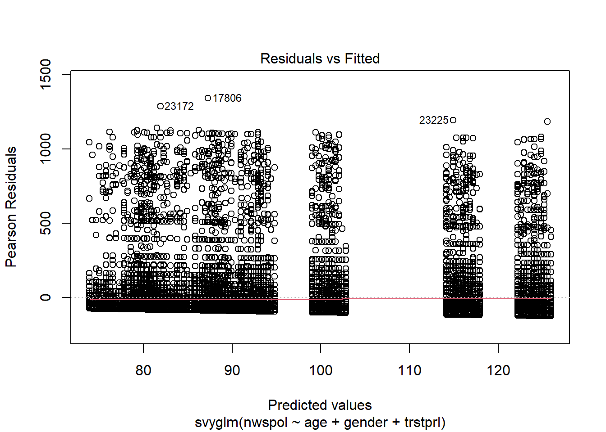
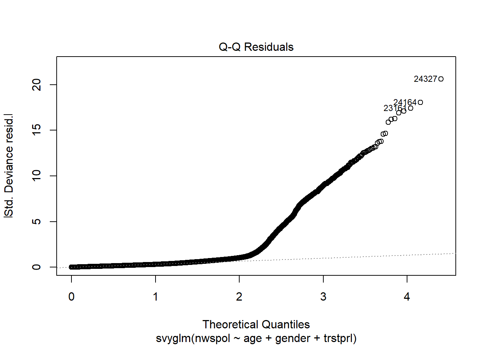
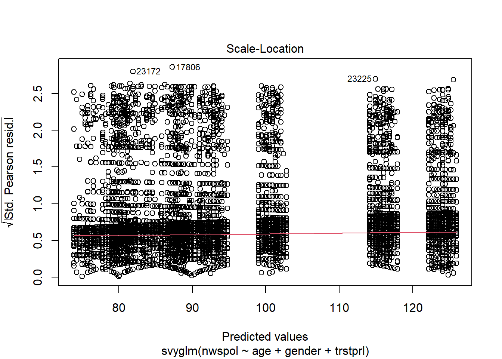
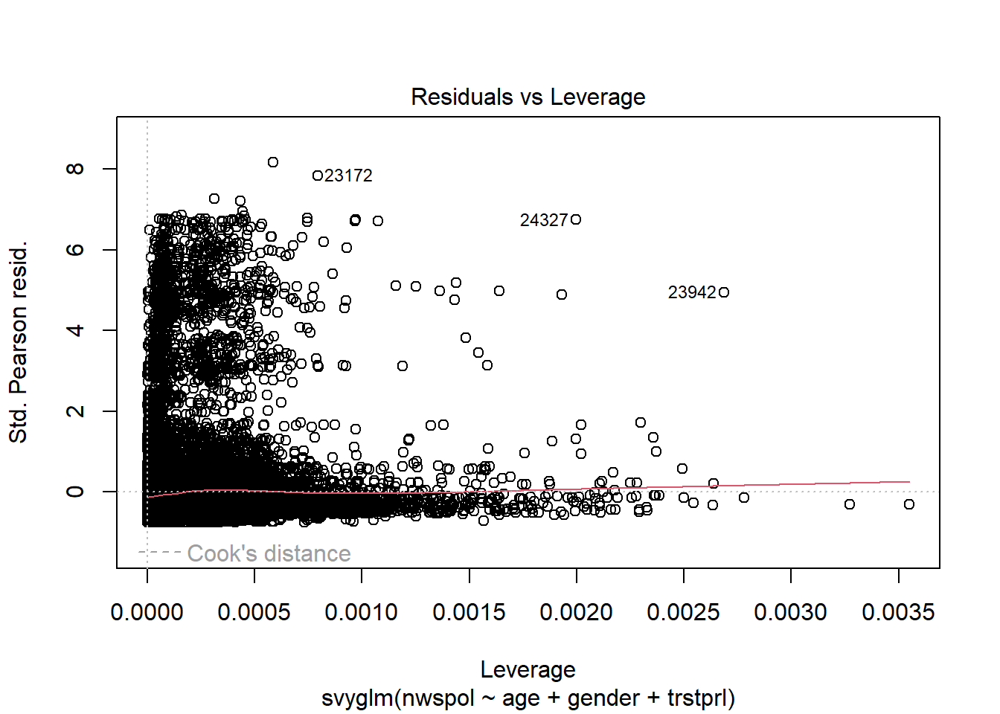

Code
root <- "C://Users//s1769862//OneDrive - University of Edinburgh//SLTF-workshop-August2024//" # change with where the folder lies in your filepath
ess9 <- readRDS(file= file.path(root, "Data", "ess9.RData"))The is the final session of the workshop and covers a few extensions, including regression diagnostics.
Load all of the required packages if they are not already in your R environment.
Remember that we “saved” our wrangled dataset to the working directory in the previous section as an .RDatafile in our workshop folder.
root <- "C://Users//s1769862//OneDrive - University of Edinburgh//SLTF-workshop-August2024//" # change with where the folder lies in your filepath
ess9 <- readRDS(file= file.path(root, "Data", "ess9.RData"))We also need to re-specify our sampling design object and PSU adjustment settings.
design2 <- survey::svydesign(ids = ~psu, strata = ~stratum, weights = ~anweight, data = ess9)
options(survey.lonely.psu="adjust") # adjust for lonely psuFirst, we can expand upon the reporting of regression outputs by integrating model fit criteria into the summary tables.
This can be accomplished via glance table from the gtsummary tbl_regression function, which pulls the fit information directly from the svyglm model output.
survey::svyglm(nwspol ~ age, family=gaussian, design=design2) %>%
tbl_regression() %>%
bold_p(t=0.05) %>%
add_glance_table(include=c(everything()))| Characteristic | Beta | 95% CI1 | p-value |
|---|---|---|---|
| age | |||
| 18 to 25 | — | — | |
| 25 to 35 | 5.1 | -5.8, 16 | 0.4 |
| 36 to 49 | 3.9 | -6.0, 14 | 0.4 |
| 50 to 64 | 17 | 6.5, 28 | 0.002 |
| 65+ | 39 | 30, 49 | <0.001 |
| Null deviance | 1,315,576,458 | ||
| Null df | 47,593 | ||
| AIC | 614,789 | ||
| BIC | 1,305,684,998 | ||
| Deviance | 1,305,684,944 | ||
| Residual df | 21,255 | ||
| No. Obs. | 47,594 | ||
| 1 CI = Confidence Interval | |||
This also applied to logistic regression results
survey::svyglm(vote ~ trstprl + gender + age, family=quasibinomial, design = design2) %>% tbl_regression(exponentiate=T, label = c(trstprl~"Trust in parliament")) %>%
bold_p(t=0.05) %>%
add_glance_table(include=c(everything()))| Characteristic | OR1 | 95% CI1 | p-value |
|---|---|---|---|
| Trust in parliament | 1.17 | 1.15, 1.19 | <0.001 |
| gender | |||
| Female | — | — | |
| Male | 1.04 | 0.96, 1.12 | 0.4 |
| age | |||
| 18 to 25 | — | — | |
| 25 to 35 | 1.43 | 1.24, 1.66 | <0.001 |
| 36 to 49 | 2.06 | 1.79, 2.37 | <0.001 |
| 50 to 64 | 3.01 | 2.61, 3.47 | <0.001 |
| 65+ | 3.41 | 2.95, 3.94 | <0.001 |
| Null deviance | 44,668 | ||
| Null df | 44,077 | ||
| AIC | 42,547 | ||
| BIC | 42,587 | ||
| Deviance | 42,512 | ||
| Residual df | 19,811 | ||
| No. Obs. | 44,078 | ||
| 1 OR = Odds Ratio, CI = Confidence Interval | |||
The automatic summary output does not include a pseudo r-squared estimate, but we can request this manually from the survey package.
m1 <- survey::svyglm(vote ~ trstprl + gender + age, family=quasibinomial, design = design2)
psrsq(m1)[1] 0.04923396We can add this information back to our the summary object created for the model.
m1$r.squared <- psrsq(m1)
m1 %>% tbl_regression(exponential=T,label = c(trstprl~"Trust in parliament")) %>%
bold_p(t=0.05) %>%
add_glance_table(include=c(everything()))| Characteristic | log(OR)1 | 95% CI1 | p-value |
|---|---|---|---|
| Trust in parliament | 0.16 | 0.14, 0.17 | <0.001 |
| gender | |||
| Female | — | — | |
| Male | 0.04 | -0.04, 0.11 | 0.4 |
| age | |||
| 18 to 25 | — | — | |
| 25 to 35 | 0.36 | 0.21, 0.51 | <0.001 |
| 36 to 49 | 0.72 | 0.58, 0.86 | <0.001 |
| 50 to 64 | 1.1 | 0.96, 1.2 | <0.001 |
| 65+ | 1.2 | 1.1, 1.4 | <0.001 |
| Null deviance | 44,668 | ||
| Null df | 44,077 | ||
| AIC | 42,547 | ||
| BIC | 42,587 | ||
| Deviance | 42,512 | ||
| Residual df | 19,811 | ||
| No. Obs. | 44,078 | ||
| 1 OR = Odds Ratio, CI = Confidence Interval | |||
You can select which estimation methods to use! See the full list on the data documentation methods = c("Nagelkerke", "Cox-Snell")
Add model fit information to your own regression model.
Customise the output information and styling!
For reference, see tbl_regression
## Write your own code!Model coefficients from survey adjusted models can also be plotted.
I like using the jtools package for visualising the odds rations from binary logistic regression models.
survey::svyglm(vote ~ trstprl + gender + age, family=quasibinomial, design = design2) %>%
jtools::plot_coefs(exp=T,
coefs = c("Trust in parliament" = "trstprl",
"Gender(ref=male)" = "genderMale",
"Age 25-35(ref=18-25)" = "age25 to 35",
"Age 36-49(ref=18-25)" = "age36 to 49",
"Age 50-64(ref=18-25)" = "age50 to 64",
"Age 65+(ref=18-25)" = "age65+"))
Beyond coefficients, predicted values can be plotted and evaluated.
Let us go back and create a model for predicting news consumption using OLS regression to see effect plots for continuous outcomes.
I theorise that trust is parliament is predictive of increased news consumption, and wish to control for age and gender.
m2 <- survey::svyglm(nwspol ~ age + gender + trstprl, family=gaussian, design=design2)We can go back and look at the model summary.
m2 %>%
tbl_regression(exponential=T,label = c(trstprl~"Trust in parliament")) %>%
add_glance_table(include=c(everything())) %>%
bold_p(t=0.05)| Characteristic | Beta | 95% CI1 | p-value |
|---|---|---|---|
| age | |||
| 18 to 25 | — | — | |
| 25 to 35 | 5.4 | -5.9, 17 | 0.4 |
| 36 to 49 | 3.9 | -6.1, 14 | 0.4 |
| 50 to 64 | 17 | 6.2, 28 | 0.002 |
| 65+ | 40 | 31, 50 | <0.001 |
| gender | |||
| Female | — | — | |
| Male | 8.0 | 2.9, 13 | 0.002 |
| Trust in parliament | 0.38 | -0.83, 1.6 | 0.5 |
| Null deviance | 1,269,936,326 | ||
| Null df | 46,606 | ||
| AIC | 599,723 | ||
| BIC | 1,259,242,848 | ||
| Deviance | 1,259,242,773 | ||
| Residual df | 20,956 | ||
| No. Obs. | 46,607 | ||
| 1 CI = Confidence Interval | |||
It looks like my predicted relationship is not supported by the model.
Nevertheless, we can investigate the model fit and predicted values.
First, we can use an effect plot to look at the predicted relationship between trust in parliament and news consumption.
jtools::effect_plot(m2, pred=trstprl, interval = T)
The error bars are very large, which makes sense because this was not a statistically significant relationship in the model.
Calling plot on the data object provides a host of residuals plots.
plot(m2)



The qqplot indicates that the fit gets worse for the top quantiles.
The Scale-Location plot does not raise significant alarm bells for homoscedasticity.
Practice your own survey data analysis and extensions… There are many!
I hope these workshop materials were helpful in some way.